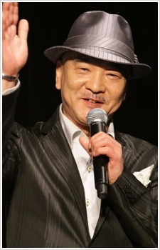

Ikuya Sawaski is a Japanese voice actor. He is affiliated with Arts Vision. He voiced in Coleman in Big Wars and Gooley in Dirty Pair.
- Gender: Female
- Birthday: August 25, 1951
- Hometown: Chiba, Japan

|
|---|
|  |
Ikuya Sawaski is a Japanese voice actor. He is affiliated with Arts Vision. He voiced in Coleman in Big Wars and Gooley in Dirty Pair.
|
|---|
 |
Ichirou Ohno | Sailor Moon Super S | Ichirou Ohno is a famous chef who is a master of French cuisine and one of the top 5 chefs of French cuisine. He studied cooking in French. He was the head chef of 3-star restaurant in France. He was the lover of Mayako. |
Go Back to Main Page |
Go Back to Homepage |
|
|
|
OR |
|